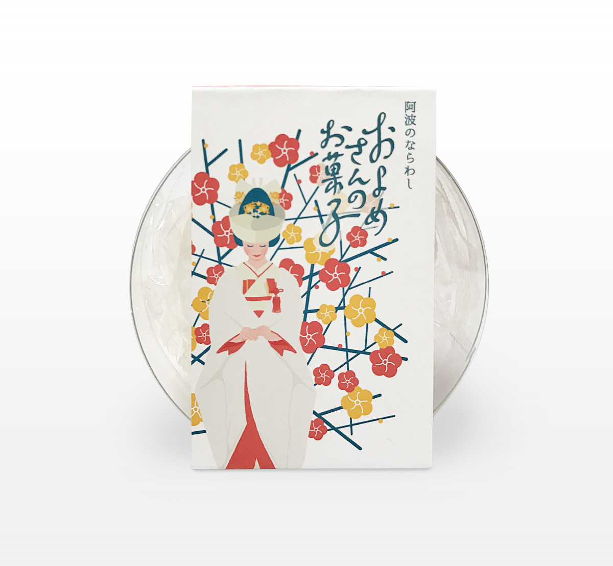
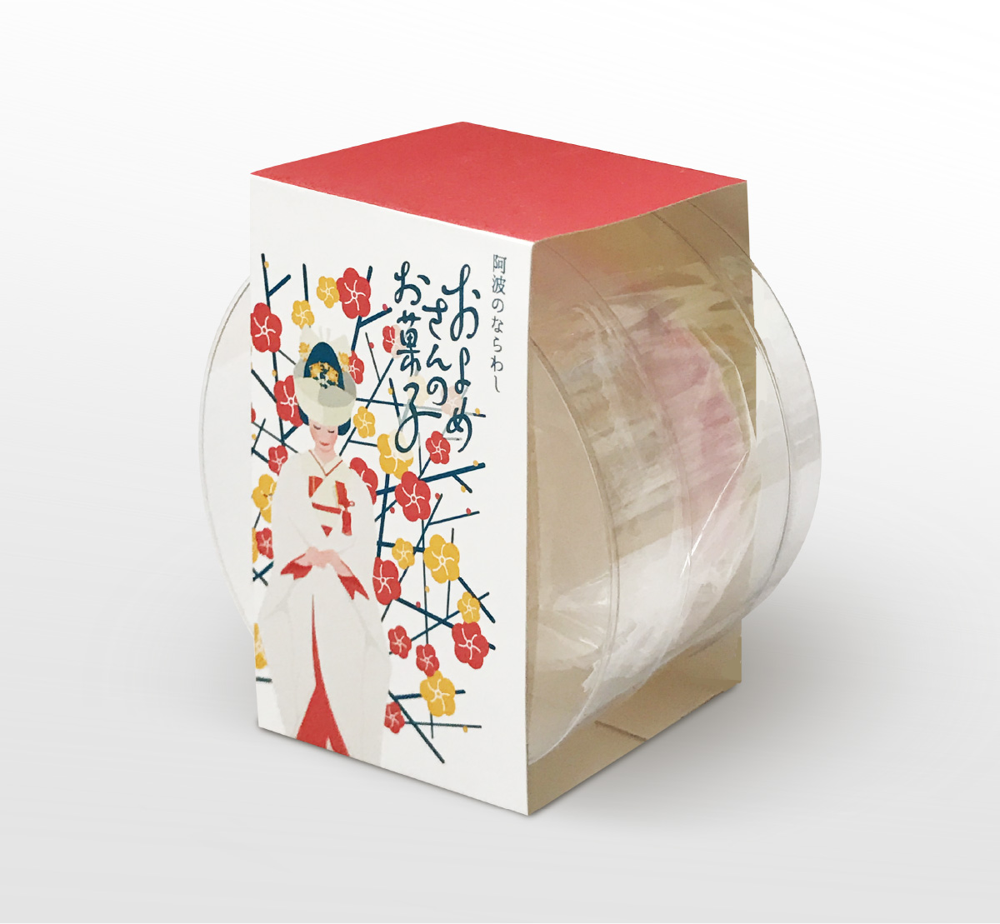
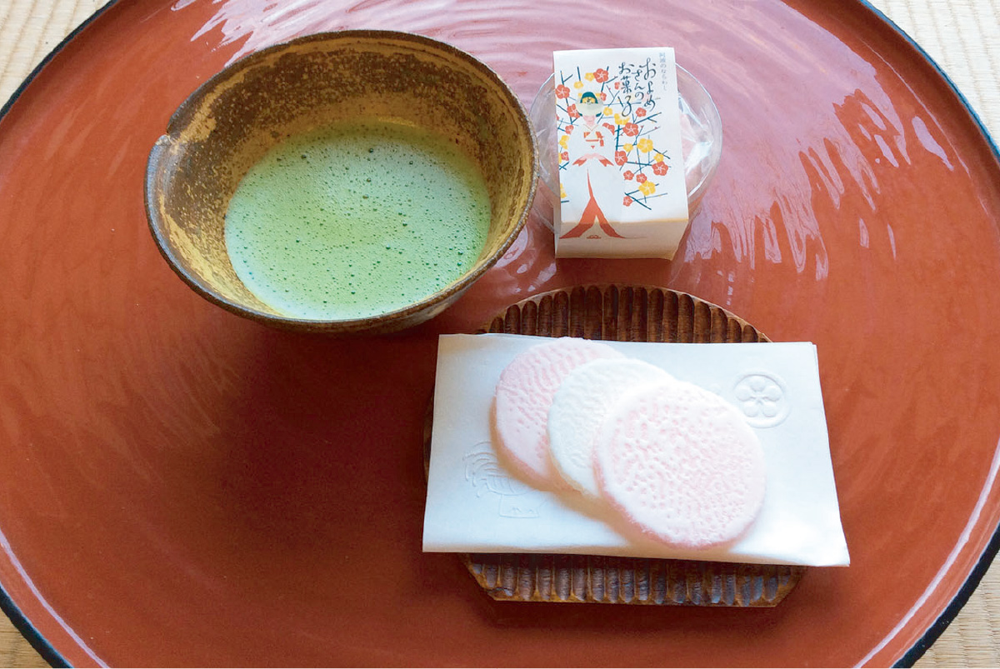

およめさんのお菓子
銀座百楽
パッケージ / イラスト
2016. 12



パッケージ / イラスト
2016. 12
嫁入りの際にご近所に麩菓子を配る風習がある徳島県。その麩菓子をお土産として仕上げた「およめさんのお菓子」のパッケージデザイン。
徳島県の空港や土産店にて販売。紅白の柔らかい色味の麩菓子の様子がわかるよう透明のプラケースに入れ、柔らかな印象の花嫁のイラストと商品ロゴを配したスリーブで包みました。
＜ BACK
© Moeri Ito